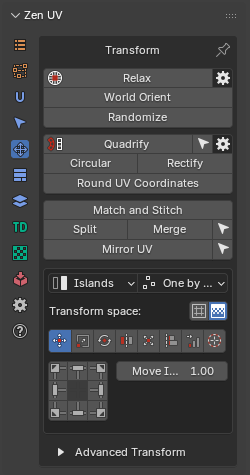
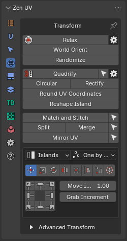
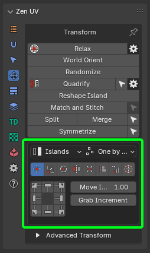
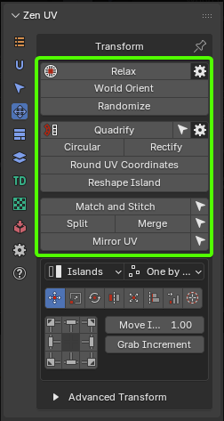

Transform System Overview
This panel contains tools to transform UVs.
Panel
| 3D Viewport | UV Editor |
|---|---|
 |
 |
{kind=link}
{kind=link}
UV Editor panel contains extra operator Reshape Islands. Click to read full information.
The Transform System is organized into three complementary subsystem tiers that cater to different interaction styles—from fast, interactive UI control to precise hotkey workflows and advanced geometric algorithms.
1. Unified Transform System
 |
|---|
| Fig. 1. Unified Transform System Panel |
{kind=link}
The Unified Transform System acts as the primary interactive hub, centering around the Universal Control Panel. It combines common spatial operations with directional controls and adaptive pivot behaviors.
- Universal Control Panel: An interactive grid-based button interface whose actions dynamically update depending on the active operation type.
- Global Scope Controls:
- Transform Space: Toggles between moving/scaling mesh Islands or transforming the underlying Texture directly in the 3D viewport.
- Mode: Controls whether operations affect entire Islands or fine-grained sub-element Selection (faces, edges, vertices).
- Order: Dictates execution handling—processing items One by one, acting on Overall selection as a single unit, or anchoring relative to the System Pivot.
- Integrated Operation Modes:
- Move / Rotate / Flip: Interactive shifting, directional alignment, and axis flipping with user-defined increments.
- Scale: Includes axis-ratio controls, Quick Tuners (“D” double, “H” half, “R” reset), and real-world Units-based scaling relative to UV tile boundaries.
- Fit / Fit into Region: Scales elements to fill defined bounding areas, custom regions, or active UDIM spaces while maintaining aspect ratios or filling margins.
- Align / Distribute: Aligns components against bounding boxes, 2D cursor origins, or specific UDIM tiles, with dedicated tools to distribute, sort, or arrange islands.
2. Advanced Transforms
 |
|---|
| Fig. 2. Advanced Transforms Panel |
The Advanced Transforms suite provides individual, operator-level equivalents of the unified tools designed without reliance on the Universal Control Panel interface. These discrete operators are optimized for custom hotkey binding, macro setup, and direct numeric input.
- Dedicated Operators: Standalone versions of Move, Scale, Rotate, Flip, Fit, Align, and Distribute that expose full property popups (
F9) upon execution. - Extended Positioning & UDIM Routing: Features precise target relocation operators, such as Move Island, Move to UV Area, Move 2D Cursor To, and quick eyedropper placement tools (Move To UV Area / Move to UV position) for instant target shifting across custom coordinates or UDIM tiles.
- Granular Control: Every operator explicitly exposes mode parameters (Islands vs. Selection, processing order, pivot anchors, custom UV axis constraints) for specialized pipeline scripting.
3. Independent Transform Operators
 |
|---|
| Fig. 3. Independent Transform Operators Panel |
{kind=link}
The Independent Transform Operators operate outside the unified panel structure to perform complex geometric reconstruction, topology straightening, relaxation, and procedural distribution.
- Topology & Geometry Normalization:
- Quadrify Islands: Converts rectangular quad meshes into perfectly straight grid UV islands.
- Rectify: Fits complex islands into tight rectangular layouts with built-in relaxation algorithms.
- Reshape Island: Straightens edge loops, aligns boundaries, or shapes UVs using specialized preset patterns (Selected, U/V Direction, Borders).
- Circular: Arranges selected UV loops into uniform circular formations.
- Relaxation & Deformation Control:
- Relax / Relax Along Axis: Minimizes surface area and angle distortion using specialized algorithms (Zen Relax, Angle Based, Conformal, SLIM Minimum Stretch), with support for axis constraints or custom vector directions via the Touch Tool.
- Structural Matching & Placement:
- Match and Stitch: Matches position, rotation, and scale between corresponding islands and welds shared edges together.
- World Orient: Realigns islands in 2D space according to their 3D object-space orientation using organic or hard-surface heuristics.
- Randomize: Applies controlled random variations to position, rotation, and scale in Simple or Advanced step modes.
- Utility Operations: Includes Split UV, Merge UV Verts, Mirror UV (symmetrical UV copying), and Round UV Coordinates for pixel-grid snapping.